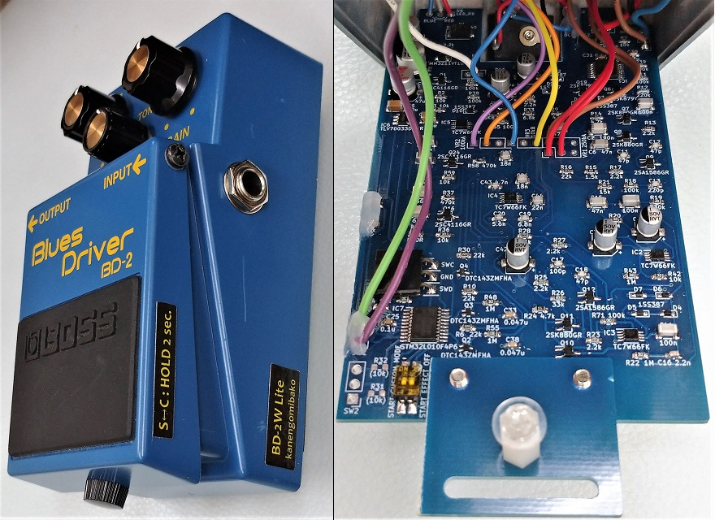
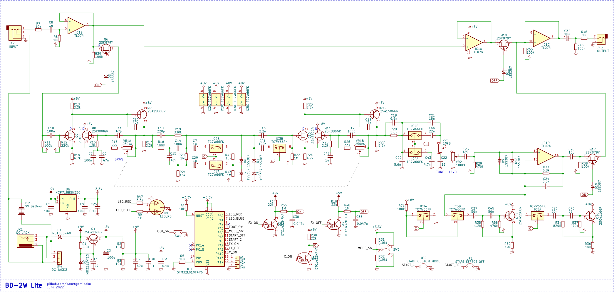
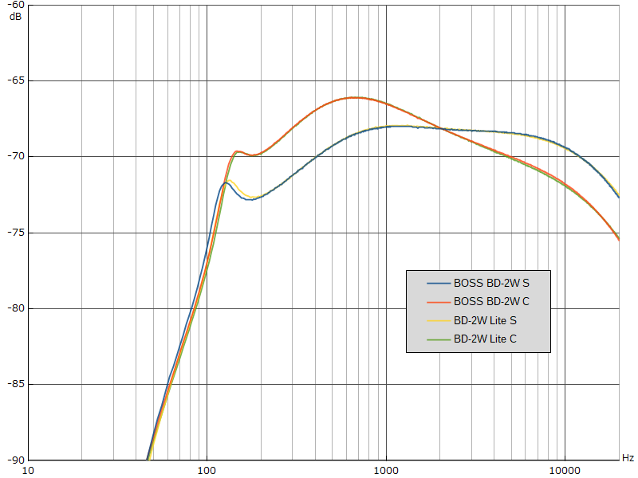

BOSS BD-2W Lite
2022年09月13日 カテゴリー：自作エフェクター（アナログ）

BOSS BD-2のSMDバージョンを解析し空のケースが残ったので、中身を製作することにしました。BOSS BD-2Wの簡略化バージョンで、スタンダードモードとカスタムモードの切替はフットスイッチ長押しです。
メイン基板は製造費用が上がらないように10cm以内に納め、小さい基板を繋ぎ合わせてうまく筐体にはまるようにしました。基板上の部品は何となく表面実装で統一したい気持ちがあります。ただ表面実装のフィルムコンデンサは高価なため、C0G特性の積層セラミックコンデンサ（MLCC）を使っています。これならばLCSC Electronicsでそれなりに安く買うことができます。
▽回路図（KiCadデータはGitHubへ）

バッファ等をオペアンプへと変更してあります。Liteバージョンのつもりでしたが、あまり簡略化されていません。秋月電子にあるマイコンSTM32L010F4P6を使っており、それに伴う3.3V→9Vへのレベル変換を行っています。ピンが余っていたので、起動時のモード設定やエフェクトオンオフ状態を内部DIPスイッチで選べるようにしました。念のため基板左下にモード切替スイッチを接続できるようにしていましたが、使用していません（内部プログラムも未対応）。消費電流は実測15mAで、意外と少なく済みました。
3.3Vレギュレータには手持ちにあったTLV70033を使っていたのですが、絶対最大定格電圧が6Vだと気付かず9Vを入力していました。すぐには壊れず不安定な電圧が出力され続けていたようで、マイコンが動作しなくなっており、レギュレータだけでなくマイコンも交換することになってしまいました。基本的に耐圧が低いパーツは買わないよう気をつけようと思います。
▽周波数特性（TONE 50% GAIN 50%）

本家BD-2Wとの比較です。スタンダードモードでズレがありますが、部品の値の誤差だと考えられるので追求しませんでした。出音はほぼ同じだと感じましたが、ディスクリート構成かどうかによる違いもあるはずなので、敏感な方はたぶん差がわかるのだろうと思います。